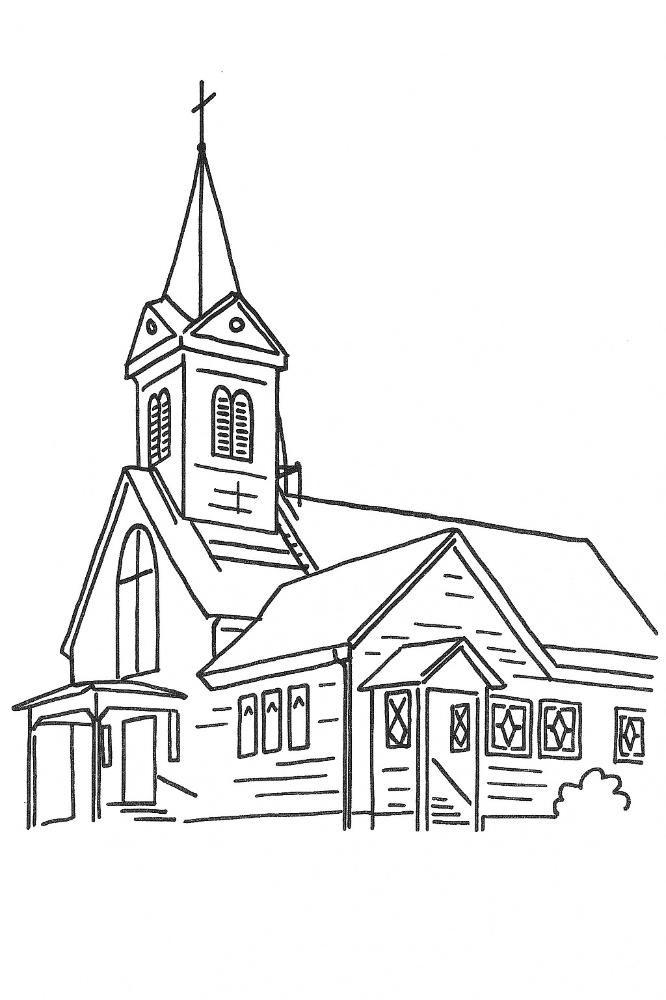

Nosotros
Somos una comunidad luterana comprometida con la fe, el servicio y la tradición.
Nuestra iglesia tiene una larga historia en la región del Lago Llanquihue, sirviendo a las comunidades locales con amor y dedicación.
Conocer másUna comunidad de fe en el corazón de la Región de Los Lagos

Únete a nuestro culto dominical cada semana. Un espacio de adoración, reflexión y comunidad.
Todos los domingos
Espacio de formación y aprendizaje para niños y jóvenes sobre las enseñanzas bíblicas.
Domingos 10:00 AM
Nuestro coro alaba a Dios a través de la música. ¡Todos son bienvenidos a participar!
Ensayos Sábados
Somos una comunidad luterana comprometida con la fe, el servicio y la tradición.
Nuestra iglesia tiene una larga historia en la región del Lago Llanquihue, sirviendo a las comunidades locales con amor y dedicación.
Conocer másMantente informado sobre nuestros eventos y actividades.
Consulta nuestro calendario actualizado con todos los cultos, celebraciones especiales y eventos de la comunidad.
Ver CalendarioParticipa en nuestras celebraciones religiosas.
Ofrecemos cultos dominicales, matrimonios, bautismos y servicios funerales. Todos son bienvenidos a nuestra comunidad.
Más información